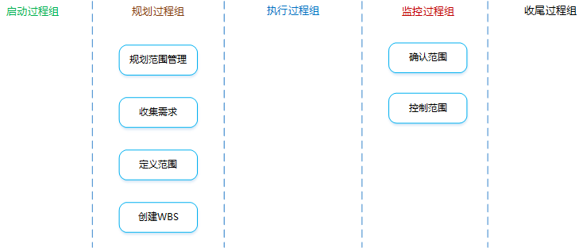

项目范围管理

项目范围管理：做且只做所需的全部工作。
在讲解子过程之前，先了解下一些定义。
范围蔓延：指未对时间、成本和资源做相应调整，未经控制的产品或项目范围的扩大。
镀金：来自团队内部原因造成的范围蔓延，例如项目人员为了“讨好”客户而做的不解决实际问题、没有应用价值的项目活动。
范围潜变：来自团队外部原因造成的范围蔓延，例如客户不断提出小的、不易察觉的范围改变，如果不加控制，累积起来导致项目严重偏离既定的范围基准，导致项目失控和失败。
如果已经发生了范围蔓延，一定要走变更流程。
是什么？：创建范围管理计划，书面描述将如何定义、确认和控制项目范围的过程。
有什么作用？：在整个项目中对如何管理范围提供指南和方向。
项目管理计划
需要参照项目管理计划中已批准的子计划。
项目章程
依据项目章程中的项目背景信息来规划各个范围管理过程。
事业环境因素
组织过程资产
范围管理计划
是什么？：描述将如何定义、指定、监督、控制和确认项目范围。（注意：范围管理计划中都是描述如何去管理范围，并没有描述有哪些范围）
有什么作用？：在整个项目中对如何管理范围提供指南和方向，有助于降低项目范围蔓延的风险。
需求管理计划
是什么？：描述在整个项目生命周期中，如何分析、记录和管理需求。（注意：需求管理计划并没有描述有哪些需求）
包含哪些内容？：
是什么？：为实现项目目标而确定、记录并管理干系人的需要和需求的过程。
有什么作用？：为定义和管理项目范围（包括产品范围）奠定基础。
范围管理计划
需求管理计划
其中有描述“整个收集需求过程的工作流程”的规定。
干系人管理计划
项目章程
其中有“产品、服务或成果的高层次描述”。
干系人登记册
其中有“干系人对项目的主要需求和期望”及“哪些干系人能提供需求方面的信息”等内容。
访谈
与干系人直接交谈，向其提出预设和即兴的问题，记录他们的回答。
焦点小组
由一位受过训练的主持人引导预先选定的干系人和主题专家进行互动式的讨论。这些参加者往往是同职能、同一领域或有相似背景条件的人。
引导式研讨会
把主要干系人召集在一起，通过集中讨论来定义产品需求。这些参与者可以是跨职能、不同部门的干系人。
群体创新技术
群体决策技术
问卷调查
设计一系列书面问题，向众多受访者快速收集信息。
需求文件
是什么？：描述各种单一需求将如何满足于项目相关的业务需求。
需求跟踪矩阵
是什么？：把产品（项目）需求从其来源连接到能满足需求的可交付成果的一种表格。
有什么作用？：
注意：收集需求时产生的需求文件和需求跟踪矩阵并不代表项目的真实范围。
是什么？：制定项目和产品详细描述的过程。
有什么作用？：
范围管理计划
项目章程
包含对项目和产品特征的高层级描述，还包括项目审批要求。
需求文件
使用需求文件来选择哪些需求将包含在项目中。
组织过程资产
专家判断
产品分析
是什么？：把高层级的产品描述转变为有形的可交付成果。
有哪些技术？：系统工程、价值工程、价值分析等。
备选方案生成
是什么？：制定尽可能多的潜在可选方案的技术，用于识别执行项目的不同方法。
有哪些技术？：备选方案分析、横向思维。
引导式研讨会
项目范围说明书
是什么？：对项目范围、主要可交付成果、假设条件和制约因素的描述。记录了整个范围，包括项目和产品范围，也代表项目干系人之间就项目范围所达成的共识。为了便于管理干系人的期望，项目范围说明书可明确指出哪些工作不属于本项目范围。
包含哪些内容？：
产品范围描述
逐步细化在项目章程和需求文件中所属的产品、服务或成果的特征。
验收标准
可交付成果通过验收前必须满足的一系列条件。
可交付成果
必须产出的任何独特并可核实的产品、成果或服务能力。也包括辅助成果，如项目管理报告和文件。
除外责任
明确说明哪些内容不属于项目范围，有助于管理干系人的期望。
制约因素
对项目或过程的执行有影响的限制性因素（如预算、里程碑、合同条款等）。
假设条件
不需验证即可视为正确、真实的因素。还应描述若这些因素不成立，可能造成的潜在影响。
项目文件更新
是什么？：把项目可交付成果和项目工作分解成较小的、更易于管理的组件的过程。
有什么作用？：对所要交付的内容提供一个结构化的视图。
注意：WBS中的“工作“并不是指工作本身，而是指工作所导致的产品或可交付成果。
范围管理计划
定义了应该如何根据详细项目范围说明书创建WBS，以及应该如何维护和批准WBS。
项目范围说明书
描述了需要实施的工作及不包含在项目中的工作，同时也列举和描述了会影响项目执行的各种内外部制约或限制条件。
需求文件
对理解需要产出什么项目结果，需要做什么来交付项目及其最终产品，都非常重要。
事业环境因素
组织过程资产
分解
是什么？：把项目范围和项目可交付成果逐步划分为更小、更便于管理的组成部分的技术。创建WBS，就是要将整个项目工作分解为工作包。
什么是工作包？：位于WBS每条分支最底层的可交付成果或项目工作组成部分，可对其成本和持续时间进行估算和管理。工作包大小在8~80小时之间。
分解的步骤？：
分解的方式？：
分解的原则？：
100%原则（包含原则） 仅包含所有可交付成果，所有下一级的元素之和必须100%地代表上一级元素。
独立责任原则
每个元素有且只有一个人负责。
80小时原则
工作包大小在8~80小时之间。
4~6层指导
不宜分解过细，每层建议4~7和元素，总层数建议在4~6层。
滚动分解原则
渐进明细。
功能或技术原则
分解时需要考虑将不同人员地工作分开。
专家判断
范围基准
未完待续...
项目文件更新